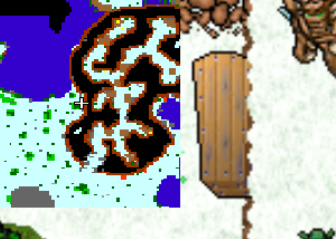

Cyclip shield to Oceanic lizard shield upgrade
Recommended level: solo 900-1200, duo 800
Reward: Ability to upgrade Cyclip shield to Oceanic lizard shield
Requirements:
 Butterfly conservation kit 3
Butterfly conservation kit 3
 Botanist’s container 3
Botanist’s container 3
Cyclip shield
To get to the oceanic lizard shield checkpoint, please check out Lands of Mysticon. Remember to take Botanist’s container 3, Butterfly conservation kit 3 and Cyclip shield with you from depot.
This quest is quite nostalgic for some players. It used to take days to find all the 21 coffins and it used to be almost impossible to block craak yetiroth. Times have changed a lot my friend.
So in order to complete this quest you need to find 21 coffins all around the snowy area. There’s some easy monsters aswell as harder ones such as Craak yetiroth and Wizard of Gamma.
To get started, first island is just for the show. Go straight to the next one and start from West. Grab 1st coffin on the middle small mountain.

Continue going North, in the bigger mountain place there’s 5 coffins in total to be found. There’s a secret way to down you need to find out in the middle floor.

After getting all 5 coffin from the mountain, you should have now 6 of them. Go around the mountain and grab the 7th coffin.
Keep going East and you’ll find the 8th coffin hugging the big mountain area.

Before going into the last mountain, grab 9th coffin behind this place.
Now you can go inside the mountain, go from the middle and head West with Helarctos and cyclip. There’s a hidden 10th coffin on the way there.

Go up, there’s 11th and 12th coffins on top of the mountain, different spots. 1 is West from the stairs, other is East.

Now continue your journey to South-East and find stairs down. From there go West and get 1 last coffin before going to the big house. After this you should have 13 coffins.
The remaining 8 coffins are all inside the house & upgrade area. Some of them come in pairs, most of them are singles.

Now you can enter the upgrade area at the top of the house. In the last room is Alpha doradus & Arm of Doom. Kill them and upgrade your shield.